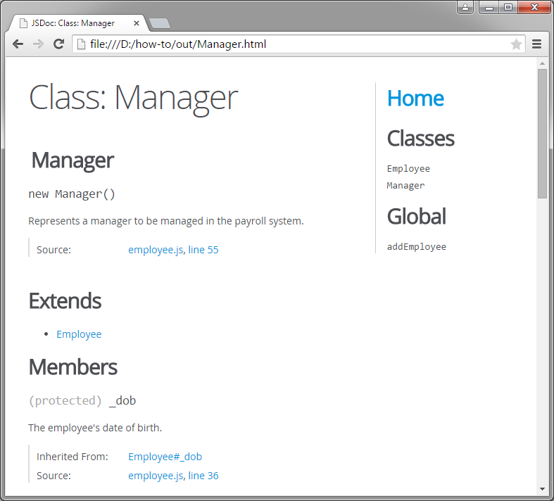
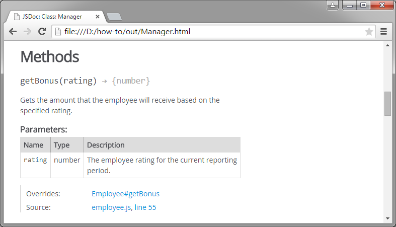

The comment block for the constructor function of an object that inherits another object is identical to that of the parent class, with the addition of the @augments block tag. When you add this tag, the HTML reference for the child class inherits the documentation for all public and protected members of the parent class.
/**
* Represents a manager to be managed in the payroll system.
* @class
* @augments Employee
*/
function Manager() {}
Manager.prototype = new Employee();Even though we only provided a brief description, the HTML reference for this new class includes all of the public and protected members of the Employee class. Also note the addition of the Extends section and the Inherited From field below the inherited member documentation.

If you do not write a comment block for a method that overrides a method in the parent class, the method automatically inherits the documentation of the parent class method. You do not need to explicitly specify that a method overrides the method in a parent class. The @inheritdoc and @override tags are only provided for compatibility with Google's Closure Compiler.
/**
* Gets the amount that the employee will receive based on the specified rating.
* @param {number} rating - The employee rating for the current reporting period.
* @returns {number} Returns the amount of the employee's bonus payment.
*/
Employee.prototype.getBonus = function(rating) {};/**
* Gets the amount that the manager will receive based on the specified rating.
* @param {number} rating - The manager rating for the current reporting period.
* @returns {number} Returns the amount of the manager's bonus payment.
*/
Manager.prototype.getBonus = function(rating) {};The following output demonstrates the difference between overriding the documentation and inheriting the documentation for a method that overrides a method in the parent class. The first example has manager-specific descriptions for the getBonus method and its parameters, while the second example is identical to the getBonus reference on the Employee page with the addition of the Overrides field. In both cases, JSDoc detects and indicates that the method overrides the getBonus method of the Employee class.
